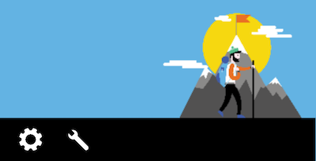

Navigation vocale
Vocaliser les images #
Cible : tout le monde et en particulier les personnes ayant des déficiences visuelles.
Quand : dès la conception, à la rédaction du contenu et pendant le développement.
Description :
Il est important que les images possèdent une alternative textuelle qui donne toutes les informations portées par l’image aux personnes qui utilisent la navigation vocale.
Dans le cas d’une image contenant du texte, l’alternative sera ledit texte. Dans le cas d’une image qui apporte des informations sous la forme d’un graphe, dessin ou autre, l’alternative devra contenir toutes les informations nécessaires présentes dans l’image.
Les images décoratives en revanche ne nécessitent pas d'alternative textuelle et ne doivent donc pas être vocalisées.
À vérifier :
- Les images portant de l’information restituent cette information à travers leurs alternatives textuelles
Exemple valide :
L'image contenant l'information de la chaine est bien vocalisée par le lecteur d'écran.

Référence WCAG :
Vocaliser tous les éléments signifiants #
Cible : tout le monde et en particulier les personnes déficientes visuelles.
Quand : dès la conception, à la rédaction du contenu et pendant le développement.
Description :
Lorsqu'un utilisateur navigue à l'aide de la navigation vocale (Talkback par exemple), chaque élément signifiant de l'écran doit lui être restitué vocalement, afin qu'il puisse utiliser l'application sans aucune perte d'information.
Les alternatives textuelles sont au cœur de l’accessibilité sur mobile. Tandis qu'un texte sera restitué nativement par le lecteur d'écran, certains éléments nécessitent une alternative textuelle pour pouvoir vocaliser l'information correctement.
Il est important de renseigner une alternative textuelle lorsque l’information n’est pas disponible ou suffisante nativement. C’est le cas des composants fournissant de l’information par la couleur, la forme, la position, le son… Sur mobile, tous les composants peuvent recevoir une alternative textuelle, il est donc possible d’enrichir la vocalisation native d’un élément, y compris celle d’un simple texte.
Certaines images sont régulièrement associées à du texte pour donner une information. C’est le cas notamment des « messages non lus » où une infobulle donne le nombre de messages à lire et où une image donne l’information « message ». Dans ce cas, la solution consiste à placer une alternative textuelle sur le texte avec toutes les informations nécessaires. Par exemple : « 3 messages non lus ». On peut également placer cette alternative sur l’image, mais dans ce cas, il faut penser à rendre le texte « invisible » pour le lecteur d’écran.
Exemple :
Ci-dessous, un exemple fréquent d’une icône qu’on couple avec du texte (infobulle) pour ajouter de l’information. Dans notre cas, l’icône « mail » couplée à l’infobulle de valeur « 3 » nous fait comprendre que nous avons « 3 mails non lus ». Si aucune alternative textuelle n’est ajoutée, 2 vocalisations seront lues « bouton sans libellé » et « 3 ». On comprend bien ici l’importance d’ajouter des alternatives textuelles.

À vérifier :
- Les éléments de l’application sont tous vocalisés et accessibles
- Les vocalisations de l’application sont explicites et compréhensibles pour chacun des éléments.
- Les éléments interactifs sont vocalisés avec l'action associée
- Les titres des activités sont vocalisés
- Les items d'une liste sont vocalisés indépendamment les uns des autres
Référence WCAG :
Gérer l'ordre de lecture avec la navigation vocale #
Cible : tout le monde et en particulier les personnes déficientes visuelles.
Quand : dès la conception, à la rédaction du contenu et pendant le développement.
Description :
L’ordre du focus du lecteur d’écran par défaut prend en compte plusieurs paramètres : la lecture « logique », en français, de gauche à droite et de haut en bas, et la lecture du xml (ordre de déclaration des éléments). Il arrive parfois que cela ne suffise pas à établir un ordre cohérent, comme dans l'exemple ci-dessous, et il est donc nécessaire de redéfinir cet ordre de lecture.
Exemple :
Dans cet exemple, l’ordre de lecture par défaut dépend complètement de l’implémentation et de l’ordre de déclaration des éléments. Dans ce cas-ci : vol+, vol-, 1, 2, 3, 4, 5, 6, 7, 8, 9, p+, p-, 0. Un ordre de lecture plus cohérent serait 1, 2, 3, 4, 5, 6, 7, 8, 9, 0, vol+, vol-, p+, p-.

À vérifier :
- L'ordre de la vocalisation suit un ordre compréhensible et logique
Référence WCAG :
Vocaliser le changement de contenu #
Cible : tout le monde et en particulier les personnes déficientes visuelles.
Quand : dès la conception, à la rédaction du contenu et pendant le développement.
Description :
Lorsque du contenu est modifié dynamiquement à la suite d’une action de l’utilisateur, il faut le notifier à la synthèse vocale. Autrement, un utilisateur non voyant ne peut pas savoir qu’une action a été déclenchée.
Une simple vocalisation peut suffire à avertir l’utilisateur. Il est très facile de déclencher des vocalisations avec TalkBack. Attention : nous parlons de la vocalisation si TalkBack est activé et non pas de TTS (Text To Speech) qui peut fonctionner indépendamment du statut de TalkBack. Il suffit de faire appel à la méthode announceForAccessibility en lui passant en paramètre l’id de la chaîne de caractère à vocaliser. À noter : la méthode announceForAccessibility est disponible sur tout élément qui hérite de View et se fait dans la langue du système.
Il est également possible de spécifier à une vue qu’elle est une région live, c’est-à-dire que son contenu est susceptible d’être modifié dynamiquement et qu’elle doit dans ce cas prévenir l’API d’accessibilité. Cela aura pour conséquence de générer des vocalisations avec TalkBack par exemple. Un exemple type d’utilisation : sur un formulaire, si l’utilisateur fait une erreur et qu’un message d’erreur apparaît, la vue contenant le message doit être définie comme une région live. Il faut passer par la méthode setAccessibilityLiveRegion qui prend en paramètre un mode pour la région live. Il existe 3 modes :
ACCESSIBILITY_LIVE_REGION_NONE: cette vue n’est pas une région live. C’est la valeur par défaut de la plupart des vues.ACCESSIBILITY_LIVE_REGION_POLITE: en cas de changement dans la vue, des vocalisations sont effectuées sur les changements. Ces vocalisations sont « polies » ; elles sont moins prioritaires que les vocalisations système par exemple.ACCESSIBILITY_LIVE_REGION_ASSERTIVE: en cas de changement dans la vue, des vocalisations seront effectuées sur les changements. Ces vocalisations sont « rude » ; elles sont prioritaires et immédiatement vocalisées. À noter, la méthodesetAccessibilityLiveRegionest disponible sur tout élément qui hérite deView.
À vérifier :
- Les messages temporaires affichés à l'écran (tels que les Toast) sont vocalisés
- L'ouverture des dialogs sont vocalisés
- Les transitions entre les activités sont vocalisées (par le titre de la nouvelle activité par exemple)
- Les messages d'erreurs sont vocalisés
- Les scrolls horizontaux sont vocalisés
- Le changement d'une partie de l'écran (par exemple le changement un fragment) est vocalisé
- Le changement d'un élément de l'écran est vocalisé si il est utile pour l'utilisateur d'en être informé
Ne pas vocaliser les éléments décoratifs et cachés #
Cible : tout le monde et en particulier les personnes déficientes visuelles.
Quand : dès la conception, à la rédaction du contenu et pendant le développement.
Description :
Afin de ne pas polluer et de ne pas rendre confus la navigation avec un lecteur d'écran, il est nécessaire de ne vocaliser que les éléments signifiants. Les éléments décoratifs, tels que les illustrations, ne doivent donc pas être vocalisés.
De plus, bien qu’invisibles à l’écran, certains éléments peuvent être lus par le lecteur d’écran (éléments positionnés en dehors de la zone visible ou masqués par d’autres éléments). La superposition d’écrans est quelque chose de courant sur mobile, mais cela engendre des problèmes d’accessibilité très lourds à corriger si elle n’est pas faite correctement dès le départ. Un lecteur d’écran tel que TalkBack est capable de lire les informations d’une vue qui est placée « sous » une autre. Mais si l’utilisateur n’est plus capable d’interagir avec cette vue, cela perturbe totalement sa navigation et celle-ci devient vite impossible.
Grand classique du problème : les fragments. Un fragment est un composant qu’on peut facilement superposer par-dessus un autre sous Android. Une mauvaise utilisation des fragments peut aboutir à une navigation impossible avec le lecteur d’écran.
Consulter l’article sur l’utilisation des fragments pour plus d’informations.
À vérifier :
- Aucun élément fantôme n'est vocalisé
- Les éléments décoratifs sont ignorés et ne sont pas vocalisés
Exemples :
En décomposant l’image :
 pas de
pas de contentDescription
imageView.setContentDescription("paramètres")
imageView.setContentDescription("éditer le nom de l’image")
Dans l’exemple ci-dessous, le cadre vert correspond au focus de TalkBack. Ce dernier vocalise (la vocalisation est affichée en bas de l’écran sur la capture) un contenu se trouvant derrière la vue active.

Référence WCAG :
Regrouper les éléments #
Cible : tout le monde et en particulier les personnes déficientes visuelles.
Quand : dès la conception, à la rédaction du contenu et pendant le développement.
Description :
Il est recommandé de regrouper les éléments pour la vocalisation vocale lorsque cela permet de gagner en efficacité et en compréhension.
Par exemple, dans le cadre d'une application de musique, il est plus intéressant de regrouper la vocalisation du titre de la musique, du nom de l'artiste et de la durée de celle-ci en un seul bloc, plutôt que de les vocaliser séparément et d'alourdir la navigation.
Il faut veiller à trouver le bon équilibre entre la navigation et la vocalisation. Vocaliser trop d'informations dans un seul bloc va nuire à l'écoute, l'utilisateur devant patienter avant d'entendre l'info qu'il recherche. Tandis qu'avoir aucun élément regroupé va augmenter la quantité d'éléments naviguables et donc alourdir la navigation. C'est d'autant plus le cas lorsqu'on a des informations multidimensionnelles.
À vérifier :
- Les éléments reliés sont groupés au sein d'un même bloc d'annonces pour la vocalisation
- Les informations multidimensionnelles respectent un bon équilibre entre le nombre de blocs et le nombre de contenus dans chaque bloc
Exemple valide :
Plusieurs éléments sont ici regroupés pour améliorer la navigation

Référence WCAG :
Permettre la navigation par entêtes #
Cible : tout le monde et en particulier les personnes déficientes visuelles.
Quand : dès la conception, à la rédaction du contenu et pendant le développement.
Description :
Au sein d'un même écran, il arrive parfois que le contenu affiché présente différentes sections, avec pour chacune d'entre elles une entête. Il est possible avec le lecteur d'écran Talkback de naviguer par entêtes, plutôt que de naviguer par éléments. Il est alors plus rapide pour un utilisateur de naviguer entre les différentes sections.
Pour que Talkback puisse reconnaitre les entêtes, il faut ajouter un attribut dans le layout XML aux différents éléments considérés comme tels : accessibilityHeading
À vérifier :
- Les entêtes sont navigables avec le paramètre "Heading" de navigation Talkback
Référence WCAG :
Permettre la navigation par contrôles #
Cible : tout le monde et en particulier les personnes déficientes visuelles.
Quand : dès la conception, à la rédaction du contenu et pendant le développement.
Description :
Avec l'outil Talkback, l'utilisateur peut opter pour la navigation entre les différents contrôles (bouton, checkbox, champs de saisie, etc...) de l'application, plutôt qu'élément par élément. Cela lui permet d'interagir plus rapidement avec l'application. Il faut donc faire attention aux éléments "custom", qui peuvent ne pas être reconnu comme contrôle.
À vérifier :
- Les éléments interactifs sont tous navigables une fois le paramètre Talkback de navigation par contrôle défini